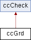

A BNCS GRD class. More...
Inheritance diagram for ccGrd:

Public Member Functions | |
| ccGrd (IccGrdCallback *callback, const string &debugHeader="ccGrd") | |
| void | clientMessage (int workstation, int device, const string &message, const string &client, const string &reference) |
| bool | connect (int device) |
| bool | counters (unsigned int &tx, unsigned int &rx) |
| bool | disconnect (void) |
| bool | isConnected (void) |
| void | loadIndexMapping (void) |
| enum cc::redundancyState | redundancyState (void) |
| void | resetCounters (void) |
| void | setCloseHostOnExit (bool close=false) |
| void | setDriverState (enum cc::driverState state, bool forceNow=false) |
| void | setRedundancyState (enum cc::redundancyState state) |
| void | setTally (int dest, int source, bool send=true) |
| int | size (int database) |
| int | tally (int dest) |
| bool | updateTally (int dest, int source) |
| virtual | ~ccGrd () |
Additional Inherited Members | |
 Private Member Functions inherited from ccCheck Private Member Functions inherited from ccCheck | |
| ccCheck (const string &header="") | |
| bool | checkDatabase (unsigned int db, unsigned int max=10) |
| bool | checkDbIndexRange (unsigned int start, unsigned int end) |
| bool | checkDevice (unsigned int device) |
| bool | checkIndex (unsigned int index) |
| bool | checkIndexRange (unsigned int start, unsigned int end) |
| bool | checkRange (unsigned int start, unsigned int end) |
| bool | checkSource (int index) |
| bool | checkString (const string &) |
| bool | checkString (const string &, unsigned int) |
| bool | checkV1Database (unsigned int db) |
| bool | checkWorkstation (unsigned int ws) |
| void | log (const string &log) |
| void | setHeader (const string &header) |
| virtual | ~ccCheck () |
Detailed Description
A BNCS GRD class.
This is a class that provides full GRD functionality for BNCS drivers.
- Usage Example
- {public:myDriver( int device ){m_grd->connect( 101 );};virtual ~myDriver() { delete m_grd; };protected:// reimplement those functions we need to (declared in IccGrdCallback)void ccgCrosspointRequest( int device, int dest, int source );{debug( "slot request. Device %d, dest %d source %d", device, dest, source );};private:ccGrd *m_grd;}
Constructor & Destructor Documentation
| ccGrd::ccGrd | ( | IccGrdCallback * | callback, |
| const string & | debugHeader = "ccGrd" |
||
| ) |
Construct a BNCS GRD class and tell it where to send notifications too (i.e. pass it an interface to the class to callback).
If the callback is not specified this class will be able to get slots but be unable to receive asynchronous notifications of change of state etc.
- Parameters
-
[in] callback pointer to the class that implements the IccGrdCallback class [in] debugStringHeader The member functions of this class generate debug messages for out of range values to which this string is prepended. A message such as "Error: Device=0" message in itself is not useful without some context!
|
virtual |
Member Function Documentation
| void ccGrd::clientMessage | ( | int | workstation, |
| int | device, | ||
| const string & | message, | ||
| const string & | client, | ||
| const string & | reference | ||
| ) |
Send a response to a ccgClientMessage
- Parameters
-
[in] workstation The client that requested this message [in] device The CC device number [in] message The message to be sent [in] client The client identifier (simply passed on from the client notification) [in] reference The client reference (simply passed on from the client notification)
Typical usage follows.....
virtual void myApp::ccgClientMessage( int ws, int dev, const string & msg, const string & client, const string & ref )
{
string myMsg;
// do something interesting here to answer the message sent to us in "message"
// and send the reply back to the client that sent it (i.e. keep the parameters we're passed intact)
clientMessage( ws, dev, myMsg, client, ref);
}
- Note
- Implementation of this messaging mechanism is patchy so beware....
| bool ccGrd::connect | ( | int | device | ) |
Connect to the specified GRD
Any existing connection is first disconnected
- Parameters
-
[in] device The device number to attempt to connect to
- Returns
- true on failure to connect
| bool ccGrd::counters | ( | unsigned int & | tx, |
| unsigned int & | rx | ||
| ) |
Return current state of counters.
This class maintains counts of received and sent messages which may be retrieved using this function
- Parameters
-
tx Refernce to the integer to pass the value back in tx Refernce to the integer to pass the value back in
- Returns
- true if the counters have changed since the last time this function was called. This can be used to determine whether its worth writing these values to the display
- See Also
- resetCounters()
| bool ccGrd::disconnect | ( | void | ) |
Disconnect from the current GRD
- Returns
- true on failure to disconnect or not currently connected
| bool ccGrd::isConnected | ( | void | ) |
Are we connected to a GRD?
- Returns
- true on connected to GRD
- Note
- this function checks both validity of handle value and whether this handle exists
| void ccGrd::loadIndexMapping | ( | void | ) |
| enum cc::redundancyState ccGrd::redundancyState | ( | void | ) |
| void ccGrd::resetCounters | ( | void | ) |
Reset the counters back to zero
This class maintains a count of sent and received messages
- See Also
- counters()
| void ccGrd::setCloseHostOnExit | ( | bool | close = false | ) |
Force a close of the host device when this class is destroyed
This is to ensure that the closure of a driver doesn't leave an active device on the network
- Parameters
-
[in] close Set true to close host on destroying this class
- Note
- This class simply posts a WM_CLOSE notification to the infodriver
| void ccGrd::setDriverState | ( | enum cc::driverState | state, |
| bool | forceNow = false |
||
| ) |
| void ccGrd::setRedundancyState | ( | enum cc::redundancyState | state | ) |
Force the TXRX status of this driver
- Parameters
-
[in] mode Either tx or rx
Typical usage follows.....
...
setRedundancyState( cc:tx ); // I'm working - force myself TX/RX
| void ccGrd::setTally | ( | int | dest, |
| int | source, | ||
| bool | send = true |
||
| ) |
Set the source for the given destination
- Parameters
-
[in] dest The dest to set [in] source The source to set it to
| int ccGrd::size | ( | int | database | ) |
| int ccGrd::tally | ( | int | dest | ) |
Return the current source for the given dest
- Parameters
-
dest The destination number whose tally is required
- Returns
- the current source or -1 if that tally is not set
| bool ccGrd::updateTally | ( | int | dest, |
| int | source | ||
| ) |
Set the source for the given dest but only if different to the current state
- Parameters
-
[in] dest The dest to set [in] source The source to set it to If the source supplied is the same value as the current tally then nothing is sent to the network
- See Also
- setTally